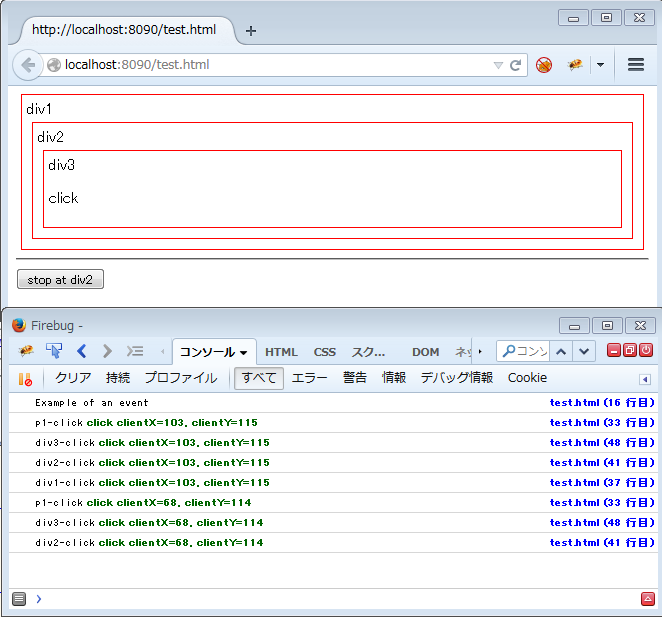
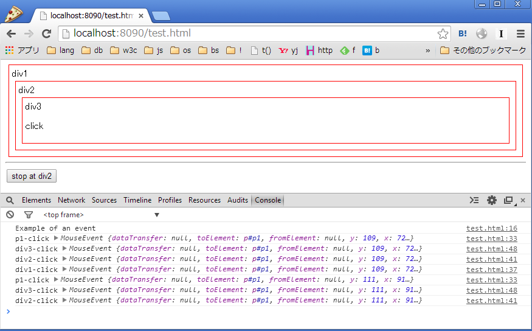
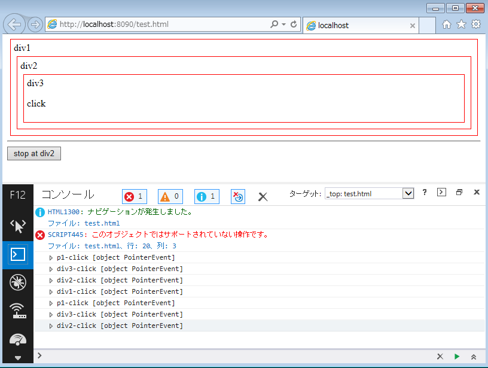

- [ Prev ]
- [ Next ]
- [ JavaScript ]
勉強中のメモです。
HTML開発でAjaxなどJavaScriptを活用しようとすると、コールバックを使った非同期処理が活躍します。
ここで一つ疑問に思ったのが、「内部実装としてはイベント処理ってどうしてるんだろう？」という点です。
Win32API開発経験者としては、「やっぱりイベントメッセージのループとかあるのかなぁ・・・」とか、「Ajaxとか非同期I/Oが発生すると、そこだけ別スレッドで処理して、処理が終わるなどのイベントが発生したら、元スレッドのイベントキューにpostしたりしてやりとりしてんのかなぁ」とか。
ということで、調査中の参考リンク、簡単なデモコードなどの仮置き場です。
参考リンク
JavaScriptのDOMイベントの分かりやすい概説
- JavaScript DOM & event
JavaScriptからDOMノードに任意のイベントハンドラを設定し、イベントを発生させるサンプルの解説
- How to trigger event in JavaScript? - Stack Overflow
JavaScriptのイベントループの内部実装の解説系
- 6 Web application APIs — HTML5
- Events and timing in-depth | JavaScript Tutorial
- http://javascript.info/tutorial/events-and-timing-depth
- "DOM mutation events are synchronous." と "Nested DOM events are synchronous." のサンプルのalert順序が記事の説明順序と違う(chrome34)
- http://javascript.info/tutorial/events-and-timing-depth
- John Resig - How JavaScript Timers Work
- xmlhttp - How does JavaScript handle AJAX responses in the background? - Stack Overflow
html5rocksより：
- ブラウザのしくみ: 最新ウェブブラウザの内部構造 - HTML5 Rocks
- 非同期JavaScriptプログラミング - HTML5アプリケーションの為の$.Deferredのパワー - HTML5 Rocks
SpiderMonkeyのThreadSafetyメモ
- SpiderMonkey Internals: Thread Safety - Mozilla | MDN
Javaでコールバック地獄を解決するためのアプローチ：
- TypeScript - コールバック……駆逐してやる…この世から…一匹…残らず!! - Qiita
- 仮想パネル: JavaScriptで非同期プログラミングを乗り切る方法
Javaでのマルチスレッドプログラミング
- JavaScriptへのマルチスレッド・プログラミングの導入
サンプルコード1
<!DOCTYPE html> <html lang="ja"> <head> <meta charset="UTF-8"> <title></title> <style type="text/css"> div { margin: 5px; padding: 5px; border: 1px solid red; } </style> <script> // [start : http://stackoverflow.com/questions/2490825/how-to-trigger-event-in-javascript の丸パクリ] // Add an event listener document.addEventListener("name-of-event", function(e) { console.log(e.detail); // Prints "Example of an event" }); // Create the event var event = new CustomEvent("name-of-event", { "detail": "Example of an event" }); // Dispatch/Trigger/Fire the event document.dispatchEvent(event); // [end] // stopPropagation() のテスト用グローバルフラグ window.div2_stop_propagate = false; function stop_propagete() { window.div2_stop_propagate = true; } function test() { // DOM要素が構築された後でないとgetElementById()でDOMノードを取り出せないので、body#onloadイベントで呼び出す。 var p1 = document.getElementById("p1"); p1.addEventListener("click", function(e) { console.log("p1-click", e); }); var div1 = document.getElementById("div1"); div1.addEventListener("click", function(e) { console.log("div1-click", e); }); var div2 = document.getElementById("div2"); div2.addEventListener("click", function(e) { console.log("div2-click", e); if (window.div2_stop_propagate) { // テスト用グローバルフラグがセットされていれば、stopPropagation()を呼んでみる。 e.stopPropagation(); } }); var div3 = document.getElementById("div3"); div3.addEventListener("click", function(e) { console.log("div3-click", e); }); } </script> </head> <body onload="test()"> <div id="div1"> div1 <div id="div2"> div2 <div id="div3"> div3 <p id="p1">click</p> </div> </div> </div> <hr> <input type="button" value="stop at div2" onclick="stop_propagete()"> </body> </html>
Firefox30での実行結果：
- 
- 最初に"Example of an event"と表示され、カスタムイベントのテストに成功している。
- 2行目～5行目までは、"click"をクリックした際に、p1 -> div3 -> div2 -> div1 の順序で順次、イベントが伝播していることを表している。
- 6行目～8行目は、"stop at div2" をクリックした後 "click" をクリックした様子。div2のところで "stopPropagation()" が呼ばれ、div1のイベントリスナーが動作していない。
Chrome34での実行結果：
- 
- Firefox30での実行結果と同じ。
IE11での実行結果：
- 
- 最初のカスタムイベントについては、IE用ではないAPIを使っていたためエラーとなってる。
- p1の"click", "stop at div2" クリック後のイベント伝播の様子は、Firefox30と同じ。
整理メモ
- ちょっと古めのサイトによると、JavaScriptはシングルスレッドで動作してるっぽい。
- そのため、イベント処理はメッセージループでやってる。Win32APIなどのGUIアプリケーションと同じモデル。
- ただ、HTML5になってDOM構築などのイベントも統合され、最低一つのイベントループ + 1つ以上のタスクキューで処理するようになった。
- また、ブラウザによってはタスクの種類とブロッキングの特性、順序付などで変更あるらしく、古めの記事のイベントハンドラ処理のサンプルコードが、記事の解説通りの順序ではイベントが発火してないケースも見られた。
- [ Prev ]
- [ Next ]
- [ Up ]
- [ JavaScript ]
original url: https://www.glamenv-septzen.net/view/1299